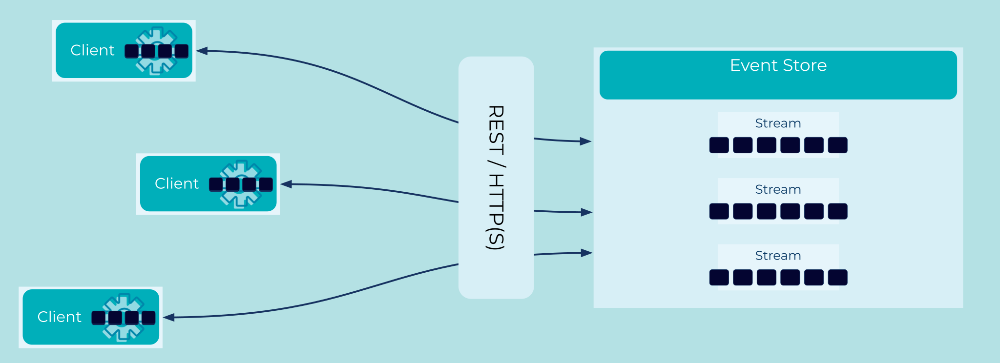

Event Gateway
One of the key benefits of adopting an Event-first architecture is to foster collaboration. Our aim is to ensure that Team A can produce data, Team B can process it and Team C can report on it, with only one thing coupling the teams together - the data itself. Teams shouldn't have to agree on shared libraries, synchronized release schedules, or common tooling. Data becomes the one true interface.
In reality though, each team will still have to communicate with the Event Store itself. How do we maximize access? How do we ensure that every team can use the event store, without insisting they choose from a shortlist of supported languages? How do we accommodate the team that insists on using Idris+?
+Or Haskell, or Rust, or Erlang, or whatever other language we didn't plan for...
Problem
How does an an Event Streaming Platform provide access to the widest-possible range of users?
Solution

Provide an event gateway via a standardized, well-supported interface that gives access to the widest possible range of users.
Implementation
Confluent provides a broad set of REST APIs that allow any language or CLI to access the event store using HTTP(S). Further, it provides support to produce and consume Apache Kafka® data, formatted as JSON, Protobuf, Avro or even raw base64-encoded bytes.
As a simple example, we can post JSON-encoded events to a topic called
sales using curl:
curl -X POST \
-H "Content-Type: application/vnd.kafka.json.v2+json" \
--data '{"records":[{"key":"alice","value":{"tickets":5}},{"key":"bob","value":{"tickets":10}}]}' \
http://localhost:8082/topics/sales
{
"offsets": [
{
"partition": 0,
"offset": 0,
"error_code": null,
"error": null
},
{
"partition": 0,
"offset": 1,
"error_code": null,
"error": null
}
],
"key_schema_id": null,
"value_schema_id": null
}
Considerations
In a perfect world, every Event Streaming Platform (and every relational database) would have first-class support for every language. Realistically some languages will be better accommodated than others, but we can still ensure every language has access to every important feature through a standards-based interface.
References
- The Confluent REST APIs documentation